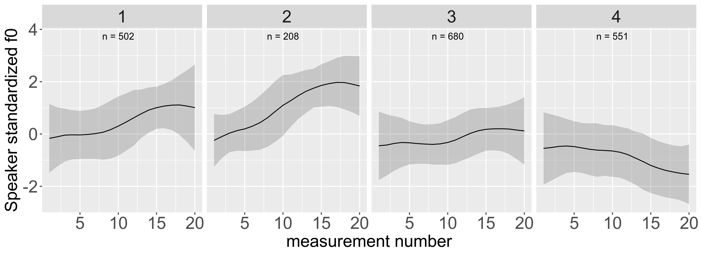

↓

Download
Complete file package as zip:→ 2024-02 - current (changelog, old versions)
R-scripts (GUI requires R-studio):
~ contour clustering GUI (recommended) - 2024-02
- contour clustering no GUI - 2022-08
Praat script:
- time-series f0 measurements - 2022-04
Cite as:
Kaland, Constantijn. 2021. Contour clustering: A field-data-driven approach for documenting and analysing prototypical f0 contours. Journal of the International Phonetic Association. doi:10.1017/S0025100321000049 [pdf]
Old versions
Complete file package as zip:- 2023-06
- 2023-05
- 2022-08
- 2022-04
- 2021-08
- 2021-03
Documentation
Manual:~ manual for Praat-script and R-script (recommended)
Additional learning material:
- two-day workshop Methods @ LingLab [Day 1] [Day 2] [OSF repository] - 11-2023
- tutorial - 03-2021
- Papuan Malay scripted noun phrases (article section 2)
- Papuan Malay spontaneous phrases (article section 3) - datafile for tutorial
- Zhagawa scripted tone syllables (article section 4)
R packages:
data.table, dplyr, dtwclust, ggdendro, ggplot2, graphics, Hmisc, Metrics, pracma, proxy, purrr, readr,
readtextgrid, scales, shiny, stats, stringr, TSdist, usedist, utils, wrassp, zoo
Cite as:
Kaland, Constantijn. 2021. Contour clustering: A field-data-driven approach for documenting and analysing prototypical f0 contours. Journal of the International Phonetic Association. doi:10.1017/S0025100321000049 [pdf]
Languages
Contour clustering has been applied to the following languages:| Language | Unit of analysis | Paper(s) | ||
| American English | words | Cole et al., 2023 | Steffman et al., 2024 | |
| Bardi | phrases | Babinski, 2022 | Babinski & Bowern, 2022 | |
| Burarra | phrases | Babinski, 2022 | ||
| Cantonese | syllable rhymes | Li et al., 2023 | ||
| Dalabon | phrases | Babinski, 2022 | ||
| German | phrases | Kaland & Ellison, 2023 | Seeliger & Kaland, 2022 | |
| Gija | phrases | Babinski, 2022 | ||
| Gunnartpa | phrases | Babinski, 2022 | ||
| Gunwinggu | phrases | Babinski, 2022 | ||
| Kayardild | phrases | Babinski, 2022 | ||
| Kera'a | words | Kaland et al., 2021 | ||
| Kunbarlang | phrases | Babinski, 2022 | ||
| Malak Malak | phrases | Babinski, 2022 | ||
| Mandarin Chinese | words | Laméris et al., 2023 | ||
| Murrinhpatha | phrases | Babinski, 2022 | ||
| Ngan’gi | phrases | Babinski, 2022 | ||
| Papuan Malay | (noun) phrases | Kaland & Ellison, 2023 | Kaland, 2021 | |
| Punjabi | hesitations | Jabeen & Wagner, 2023 | ||
| Wanyjirra | phrases | Babinski, 2022 | ||
| Warlpiri | phrases | Babinski, 2022 | ||
| Warnman | phrases | Babinski, 2022 | ||
| Yan-nhangu | phrases | Babinski, 2022 | ||
| Yidiny | phrases | Babinski, 2022 | ||
| Zhagawa | syllables | Kaland & Ellison, 2023 | Kaland, 2021 | |
style="margin-bottom: 80%;"
References
Cite as:
Kaland, Constantijn. 2021. Contour clustering: A field-data-driven approach for documenting and analysing prototypical f0 contours. Journal of the International Phonetic Association. doi:10.1017/S0025100321000049 [pdf]
Also applied in:
Steffman, Jeremy; Cole, Jennifer & Shattuck-Hufnagel, Stefanie. 2024. Intonational categories and continua in American English rising nuclear tunes. Journal of Phonetics. doi:10.1016/j.wocn.2024.101310 [pdf]
Li, Katrina Kechun; Nolan, Francis & Post, Brechtje. 2023. Clustering lexical tones with intonation variation. Proceedings of the Second International Conference on Tone and Intonation (TAI) (pp. 87-88). Chinese and Oriental Languages information Procesing Society. [pdf]
Seeliger, Heiko; Lützeler, Anne & Kaland, Constantijn. 2023. The perception of German wh-phrase-final intonation: a contour clustering evaluation. Proceedings of the Second International Conference on Tone and Intonation (TAI) (pp. 5-6). Chinese and Oriental Languages information Procesing Society. [pdf]
Jabeen, Farhat & Wagner, Petra. 2023. Variability in hesitations in Punjabi semi-spontaneous narrative speech: An automatic clustering based analysis. Proc. Disfluency in Spontaneous Speech (DiSS) Workshop 2023, 71-75. doi: 10.21437/DiSS.2023-15 [pdf]
Kaland, Constantijn. 2023. Intonation contour similarity: F0 representations and distance measures compared to human perception in two languages. The Journal of the Acoustical Society of America, 154(1), 95–107. doi: 10.1121/10.0019850 [pdf]
Kaland, Constantijn & Ellison, T. Mark. 2023. Evaluating cluster analysis on f0 contours: An information theoretic approach on three languages. In R. Skarnitzl & J. Volín (Eds.), Proceedings of the 20th International Congress of Phonetic Sciences (pp. 3448–3452). Guarant International. [pdf]
Cole, Jennifer; Steffman, Jeremy; Shattuck-hufnagel, Stefanie & Tilsen, Sam. 2023. Hierarchical distinctions in the production and perception of nuclear tunes in American English. Laboratory Phonology, 14(1), 1–51. doi: 10.16995/labphon.9437 [pdf]
Laméris, Tim Joris; Li, Katrina Kechun & Post, Brechtje. 2023. Phonetic and Phono-Lexical Accuracy of Non-Native Tone Production by English-L1 and Mandarin-L1 Speakers. Language and Speech, 0(0). doi:10.1177/00238309221143719 [pdf]
Babinski, Sarah. 2022. Archival Phonetics & Prosodic Typology in Sixteen Australian Languages. PhD Thesis, Yale University. [pdf]
Seeliger, Heiko & Kaland, Constantijn. 2022. Boundary tones in German wh-questions and wh-exclamatives - a cluster-based approach. In Proceedings of the 11th International Conference on Speech Prosody 2022 (pp. 27–31). Lisbon, Portugal. doi:10.21437/SpeechProsody.2022-6 [pdf]
Babinski, Sarah & Bowern, Claire. 2022. Automatic categorization of prosodic contours in Bardi. Proceedings of the Linguistic Society of America 7(1) (pp. 5218). doi:10.3765/plsa.v7i1.5218 [pdf]
Kaland, Constantijn; Peck, Naomi; Ellison, T. Mark & Reinöhl, Uta. 2021. An initial exploration of the interaction of tone and intonation in Kera'a. Proceedings of the 1st International Conference on Tone and Intonation (TAI) (pp. 132-136). Sønderborg, Denmark. doi:10.21437/TAI.2021-27 [pdf]
Contact
Contact author for feedback, suggestions and requests for new versions: